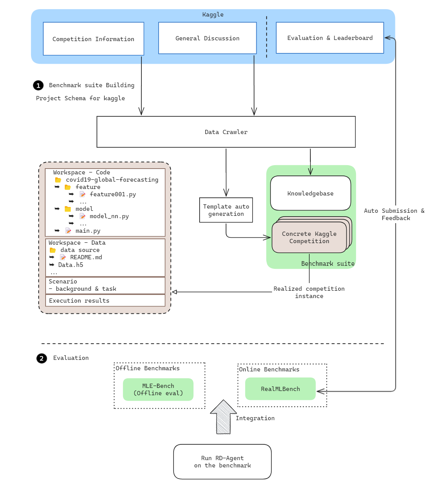
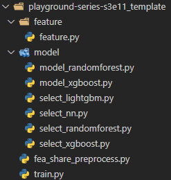

Kaggle代理¶
🤖 自动特征工程与模型调优演变¶
🎨 设计¶
📖 背景¶
在数据科学竞赛的领域中，Kaggle作为最终的竞技场，数据爱好者利用算法的力量来应对现实世界的挑战。Kaggle代理作为一个关键工具，使参与者能够无缝集成尖端模型和数据集，将原始数据转化为可操作的洞察。
通过利用**Kaggle代理**，数据科学家可以创造创新解决方案，不仅揭示隐藏的模式，还推动预测准确性和模型鲁棒性的重大进展。
🌟 介绍¶
在这种情况下，我们的自动化系统提出假设，选择行动，实施代码，进行验证，并在持续的迭代过程中利用反馈。
目标是在验证集或Kaggle排行榜中自动优化性能指标，最终通过自主研究和开发发现最有效的特征和模型。
以下是步骤的增强大纲：
步骤 1 : 假设生成 🔍
基于之前实验分析和领域专业知识生成并提出初步假设，附上充分的推理和金融依据。
步骤2：实验创建 ✨
将假设转化为任务。
在特征工程或模型调优中选择一个具体行动。
开发、定义并实现一个新特征或模型，包括其名称、描述和公式。
步骤 3 : 模型/特征实现 👨💻
根据详细描述实现模型代码。
像开发者一样迭代演进模型，确保准确性和效率。
步骤 4 : 在测试集或Kaggle上的验证 📉
使用测试集或Kaggle数据集验证新开发的模型。
根据验证结果评估模型的有效性和性能。
步骤 5: 反馈分析 🔍
分析验证结果以评估性能。
利用洞察力来完善假设并增强模型。
步骤 6: 假设完善 ♻️
根据验证反馈调整假设。
迭代该过程以持续改进模型。
🧭 示例指南¶
🔧 设置RD-Agent环境
在开始之前，请确保您已安装RD-Agent并正确配置RD-Agent环境。如果您想了解如何安装和配置RD-Agent，请参考`文档 <../installation_and_configuration.html>`_。
🔨 配置Kaggle API
在`Kaggle <https://www.kaggle.com/>`_网站上注册并登录。
点击头像（通常在页面的右上角）->
设置->创建新令牌，将下载一个名为``kaggle.json``的文件。将``kaggle.json``移动到``~/.config/kaggle/``
修改``kaggle.json``文件的权限。
chmod 600 ~/.config/kaggle/kaggle.json
有关Kaggle API设置的更多信息，请参阅`Kaggle API <https://github.com/Kaggle/kaggle-api>`_。
🔩 在.env文件中设置环境变量
确定数据将存储的路径并将其添加到``.env``文件中。
dotenv set KG_LOCAL_DATA_PATH <your local directory>/kaggle_data
📥 下载竞赛数据
Kaggle竞赛数据包含两个部分：竞赛描述文件（json文件）和竞赛数据集（zip文件）。
如何获取竞赛描述文件
手动下载（一般用户建议）：
提前下载准备好的竞赛描述文件，并将其提取到指定目录。
wget https://github.com/SunsetWolf/rdagent_resource/releases/download/kaggle_data/kaggle_data.zip unzip kaggle_data.zip -d <your local directory>/kaggle_data
自动下载（开发者建议）：
或者，您可以选择在运行程序时自动下载竞赛描述文件，但这需要安装``chromedriver``，如下所示：
# install chrome wget https://dl.google.com/linux/direct/google-chrome-stable_current_amd64.deb sudo apt install ./google-chrome-stable_current_amd64.deb google-chrome --version # install chromedriver wget "https://storage.googleapis.com/chrome-for-testing-public/$(google-chrome --version | grep -oP '\d+\.\d+\.\d+\.\d+')/linux64/chromedriver-linux64.zip" unzip chromedriver-linux64.zip cd chromedriver-linux64 sudo mv chromedriver /usr/local/bin sudo chmod +x /usr/local/bin/chromedriver chromedriver --version
如何获取竞赛数据集
竞赛数据集在程序运行时会自动下载并提取。如果zip文件存在，将跳过下载，如果解压文件夹存在，将跳过解压。
正确的目录结构（以下是id为sf-crime的竞赛数据示例）
kaggle_data └── zip_files | └── sf-crime.zip ├── sf-crime.json └── sf-crime └── ...
kaggle_data/zip_files/sf-crime.zip:从Kaggle网站下载的竞赛数据集zip文件。kaggle_data/sf-crime.json:竞赛描述文件。kaggle_data/sf-crime:用于解压竞赛数据集的目标文件夹。
🗳️ 加入竞赛
如果您的Kaggle API账户尚未加入任何竞赛，您需要在运行程序之前加入竞赛。
在竞赛详情页面的底部，您可以找到``加入竞赛``按钮，点击它并选择``我理解并接受``以加入竞赛。
在下面的**可用竞赛列表**中，您可以跳转到竞赛详情页面。
🚀 运行应用程序
您可以使用以下命令直接运行应用程序：
rdagent kaggle --competition <Competition ID>
📤 自动或手动提交结果
如果自动提交：您需要在``.env``文件中将``KG_AUTO_SUBMIT``设置为``true``。
dotenv set KG_AUTO_SUBMIT true
否则：您可以从用户界面下载预测结果并手动提交。有关更多详细信息，请参阅 用户界面指南。
📋 竞赛名单可用¶
索引 |
比赛名称 |
任务 |
模态 |
ID |
|---|---|---|---|---|
01 |
媒体宣传活动成本数据集 |
回归分析 |
表格的 |
|
02 |
野生蓝莓产量数据集 |
回归分析 |
表格的 |
|
03 |
蟹龄数据集 |
回归分析 |
表格的 |
|
04 |
洪水预测数据集 |
回归分析 |
表格的 |
|
05 |
二手车价格数据集 |
回归分析 |
表格的 |
|
06 |
肝硬化结果数据集 |
多分类 |
表格的 |
|
07 |
旧金山犯罪分类 |
多分类 |
表格的 |
|
08 |
有毒蘑菇数据集 |
分类 |
表格的 |
|
09 |
宇宙飞船泰坦尼克号 |
分类 |
表格的 |
|
10 |
森林覆盖类型预测 |
分类 |
表格的 |
|
11 |
数字识别器 |
分类 |
图像 |
|
待续 ... |
||||
🎨 为新竞赛定制一个模板¶
为了方便RD-Agent生成竞赛代码，我们指定了一个竞赛代码结构：
**特征目录**包含特征工程代码。通常不需要修改。
**模型目录**包含模型代码。select_xx.py用于根据不同模型选择不同特征。model_xx.py是不同模型的基本代码。通常只需调整一些初始参数。
**fea_share_preprocess.py**是不同模型共享的一些基本预处理代码。这里的定制程度较高，但需要保留preprocess_script()函数，该函数将在train.py中被调用。
**train.py**是主代码，连接所有代码，也是最终执行时调用的代码。
我们将很快提供一个自动/半自动模板生成工具。 如果您现在想尝试不同的竞赛，可以参考我们当前的模板结构和内容来编写新的模板。
🎯 路线图¶
已完成：
Kaggle项目架构设计 ✅
RD-Agent与kaggle架构的集成 ✅
进行中：
模板自动生成
基准优化
在线基准
RealML基准
持续集成
自动在线提交
批量评估
离线基准
MLE-基准
🛠️ 模块的使用¶
环境配置
可以在`.env`文件中设置以下环境变量，以自定义应用程序的行为：
- pydantic settings rdagent.app.kaggle.conf.KaggleBasePropSetting¶
Show JSON schema
{ "title": "KaggleBasePropSetting", "type": "object", "properties": { "scen": { "default": "rdagent.scenarios.kaggle.experiment.scenario.KGScenario", "title": "Scen", "type": "string" }, "hypothesis_gen": { "default": "rdagent.scenarios.kaggle.proposal.proposal.KGHypothesisGen", "title": "Hypothesis Gen", "type": "string" }, "hypothesis2experiment": { "default": "rdagent.scenarios.kaggle.proposal.proposal.KGHypothesis2Experiment", "title": "Hypothesis2Experiment", "type": "string" }, "feature_coder": { "default": "rdagent.scenarios.kaggle.developer.coder.KGFactorCoSTEER", "title": "Feature Coder", "type": "string" }, "model_feature_selection_coder": { "default": "rdagent.scenarios.kaggle.developer.coder.KGModelFeatureSelectionCoder", "title": "Model Feature Selection Coder", "type": "string" }, "model_coder": { "default": "rdagent.scenarios.kaggle.developer.coder.KGModelCoSTEER", "title": "Model Coder", "type": "string" }, "feature_runner": { "default": "rdagent.scenarios.kaggle.developer.runner.KGFactorRunner", "title": "Feature Runner", "type": "string" }, "model_runner": { "default": "rdagent.scenarios.kaggle.developer.runner.KGModelRunner", "title": "Model Runner", "type": "string" }, "summarizer": { "default": "rdagent.scenarios.kaggle.developer.feedback.KGExperiment2Feedback", "title": "Summarizer", "type": "string" }, "evolving_n": { "default": 10, "title": "Evolving N", "type": "integer" }, "competition": { "default": "", "title": "Competition", "type": "string" }, "template_path": { "default": "rdagent/scenarios/kaggle/experiment/templates", "title": "Template Path", "type": "string" }, "local_data_path": { "default": "", "title": "Local Data Path", "type": "string" }, "if_using_mle_data": { "default": false, "title": "If Using Mle Data", "type": "boolean" }, "auto_submit": { "default": false, "title": "Auto Submit", "type": "boolean" }, "knowledge_base": { "default": "", "title": "Knowledge Base", "type": "string" }, "if_action_choosing_based_on_UCB": { "default": false, "title": "If Action Choosing Based On Ucb", "type": "boolean" }, "domain_knowledge_path": { "default": "/data/userdata/share/kaggle/domain_knowledge", "title": "Domain Knowledge Path", "type": "string" }, "knowledge_base_path": { "default": "kg_graph.pkl", "title": "Knowledge Base Path", "type": "string" }, "rag_path": { "default": "git_ignore_folder/kaggle_vector_base.pkl", "title": "Rag Path", "type": "string" }, "if_using_vector_rag": { "default": false, "title": "If Using Vector Rag", "type": "boolean" }, "if_using_graph_rag": { "default": false, "title": "If Using Graph Rag", "type": "boolean" }, "mini_case": { "default": false, "title": "Mini Case", "type": "boolean" } }, "additionalProperties": false }
- 配置:
env_prefix: str = KG_
protected_namespaces: tuple = ()
- field auto_submit: bool = False¶
自动上传并提交每个实验结果到Kaggle平台
- field competition: str = ''¶
Kaggle竞赛名称，例如，'sf-crime'
- field domain_knowledge_path: str = '/data/userdata/share/kaggle/domain_knowledge'¶
存储领域知识文件的文件夹，格式为.case
- field evolving_n: int = 10¶
进化次数
- field feature_coder: str = 'rdagent.scenarios.kaggle.developer.coder.KGFactorCoSTEER'¶
特征编码器类
- field feature_runner: str = 'rdagent.scenarios.kaggle.developer.runner.KGFactorRunner'¶
特征运行器类
- field hypothesis2experiment: str = 'rdagent.scenarios.kaggle.proposal.proposal.KGHypothesis2Experiment'¶
实验类的假设
- field hypothesis_gen: str = 'rdagent.scenarios.kaggle.proposal.proposal.KGHypothesisGen'¶
假设生成类
- field if_action_choosing_based_on_UCB: bool = False¶
基于UCB算法的决策机制启用
- field if_using_graph_rag: bool = False¶
启用高级图形基础RAG
- field if_using_mle_data: bool = False¶
- field if_using_vector_rag: bool = False¶
启用基本向量基础RAG
- field knowledge_base: str = ''¶
知识库类，当启用高级图形基础RAG时使用'KGKnowledgeGraph'，否则为空。
- field knowledge_base_path: str = 'kg_graph.pkl'¶
基于图形的RAG的高级版本
- field local_data_path: str = ''¶
存储Kaggle竞赛数据的文件夹
- field mini_case: bool = False¶
启用实验的迷你案例研究
- field model_coder: str = 'rdagent.scenarios.kaggle.developer.coder.KGModelCoSTEER'¶
模型编码器类
- field model_feature_selection_coder: str = 'rdagent.scenarios.kaggle.developer.coder.KGModelFeatureSelectionCoder'¶
模型特征选择编码器类
- field model_runner: str = 'rdagent.scenarios.kaggle.developer.runner.KGModelRunner'¶
模型运行器类
- field rag_path: str = 'git_ignore_folder/kaggle_vector_base.pkl'¶
基于向量的RAG基础版本
- field scen: str = 'rdagent.scenarios.kaggle.experiment.scenario.KGScenario'¶
数据挖掘模型的场景类
- field summarizer: str = 'rdagent.scenarios.kaggle.developer.feedback.KGExperiment2Feedback'¶
总结类
- field template_path: str = 'rdagent/scenarios/kaggle/experiment/templates'¶
Kaggle竞赛基础模板路径
- pydantic settings rdagent.components.coder.factor_coder.config.FactorCoSTEERSettings
Show JSON schema
{ "title": "FactorCoSTEERSettings", "type": "object", "properties": { "coder_use_cache": { "default": false, "title": "Coder Use Cache", "type": "boolean" }, "max_loop": { "default": 10, "title": "Max Loop", "type": "integer" }, "fail_task_trial_limit": { "default": 20, "title": "Fail Task Trial Limit", "type": "integer" }, "v1_query_former_trace_limit": { "default": 5, "title": "V1 Query Former Trace Limit", "type": "integer" }, "v1_query_similar_success_limit": { "default": 5, "title": "V1 Query Similar Success Limit", "type": "integer" }, "v2_query_component_limit": { "default": 1, "title": "V2 Query Component Limit", "type": "integer" }, "v2_query_error_limit": { "default": 1, "title": "V2 Query Error Limit", "type": "integer" }, "v2_query_former_trace_limit": { "default": 1, "title": "V2 Query Former Trace Limit", "type": "integer" }, "v2_add_fail_attempt_to_latest_successful_execution": { "default": false, "title": "V2 Add Fail Attempt To Latest Successful Execution", "type": "boolean" }, "v2_error_summary": { "default": false, "title": "V2 Error Summary", "type": "boolean" }, "v2_knowledge_sampler": { "default": 1.0, "title": "V2 Knowledge Sampler", "type": "number" }, "knowledge_base_path": { "anyOf": [ { "type": "string" }, { "type": "null" } ], "default": null, "title": "Knowledge Base Path" }, "new_knowledge_base_path": { "anyOf": [ { "type": "string" }, { "type": "null" } ], "default": null, "title": "New Knowledge Base Path" }, "max_seconds": { "default": 1000000, "title": "Max Seconds", "type": "integer" }, "data_folder": { "default": "git_ignore_folder/factor_implementation_source_data", "title": "Data Folder", "type": "string" }, "data_folder_debug": { "default": "git_ignore_folder/factor_implementation_source_data_debug", "title": "Data Folder Debug", "type": "string" }, "simple_background": { "default": false, "title": "Simple Background", "type": "boolean" }, "file_based_execution_timeout": { "default": 120, "title": "File Based Execution Timeout", "type": "integer" }, "select_method": { "default": "random", "title": "Select Method", "type": "string" }, "python_bin": { "default": "python", "title": "Python Bin", "type": "string" } }, "additionalProperties": false }
- 配置:
env_prefix: str = FACTOR_CoSTEER_
- field coder_use_cache: bool = False
指示是否为编码器使用缓存
- field file_based_execution_timeout: int = 120
每个因子实现执行的超时时间（秒）
- field max_loop: int = 10
任务实现循环的最大数量
- field max_seconds: int = 1000000
- field python_bin: str = 'python'
Python 二进制文件的路径
- field select_method: str = 'random'
因子实现选择的方法
- field simple_background: bool = False
是否使用简单的背景信息进行代码反馈